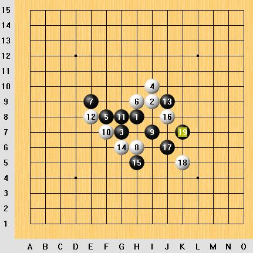
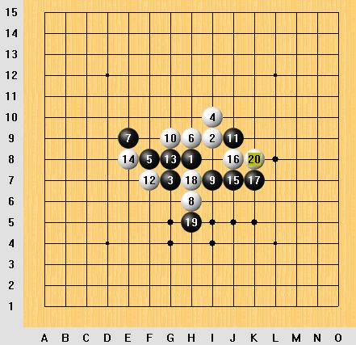
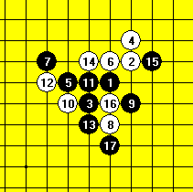
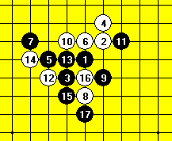
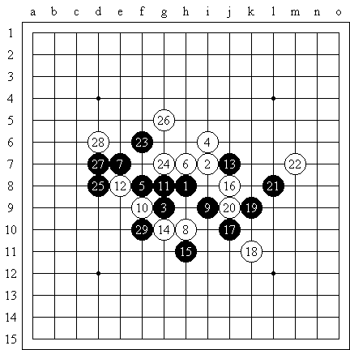
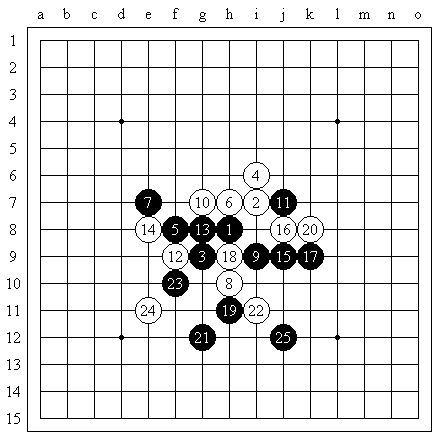

斜月立4二打必胜问题
#1 斜月立4二打必胜问题作者：sheal 发表时间：2007-7-7 10:08:53
问题一:
针对下图的白16,黑17,19是否正确?能否必胜?或者该换黑17还是黑19?

问题二:
下图的哪个黑21能必胜啊?

附上黑石研究的lib谱
 I11_4=I10_2.rar
I11_4=I10_2.rar#2 Re:斜月立4二打必胜问题作者：游戏人间 发表时间：2007-7-7 12:34:01
图一
17后没难点咯

图二次序变下和图一的一样
#3 Re:Re:斜月立4二打必胜问题作者：江南新绿 发表时间：2007-7-7 13:41:35


本来无一物。。。
#4 Re:斜月立4二打必胜问题作者：虚无 发表时间：2008-4-1 9:53:16
怎样发图片的哦??
#5 Re:斜月立4二打必胜问题作者：百医天使 发表时间：2008-4-1 23:50:46
这个局，曾经被别人砍过，现在明白一点儿了，谢了，